CLAUDE’S PICK


LLM 테이블 데이터 참조 오류 측정 및 개선 연구
LLM이 테이블 구조는 이해하면서도 잘못된 셀값을 인용하거나 누락하는 데이터 참조 오류(DRE)를 체계적으로 분석한 연구다. 1.7B부터 20B 파라미터의 모든 테스트 모델에서 DRE가 발생하며, 이는 최종 답변의 정확성뿐만 아니라 중간 추론 단계의 신뢰성을 훼손한다. 데이터 참조를 비평자(critic)로 활용하여 답변 정확도를 최대 12.0% 향상시키고, 4B 파라미터 경량 비평자 모델로 평균 F1 점수 78.2%의 오류 탐지 성능을 달성했다.
핵심 포인트: 핵심 성과: 모든 규모의 LLM에서 발생하는 테이블 데이터 참조 오류의 첫 체계적 평가 제시, 비평자 기반 필터링으로 답변 정확도 최대 12.0% 개선, 4B 파라미터 경량 모델로 78.2% F1 점수 달성하여 대규모 모델 추론 보조
논문 (Papers)
TableLlama 외 4가지 STI 모델: 표의 엔티티 해석 성능 비교 평가
표의 의미를 정확히 이해하기 위한 엔티티 해석 작업에서 휴리스틱 기반 알고리즘과 대규모 언어모델의 성능을 체계적으로 평가한 연구. Alligator, Dagobah, TURL, TableLlama 및 GPT-4o 모델들을 공통 평가 기준으로 비교하여 각 접근 방식의 성능, 계산 비용, 실용성을 측정하고 테이블 주석 처리 분야의 새로운 연구 방향을 제시한다.
핵심 포인트: 핵심 기여: 4가지 최신 표 해석 기법(Alligator, Dagobah, TURL, TableLlama)과 GPT-4o 기반 접근법을 대규모로 통일된 평가틀 위에서 비교 분석하여 휴리스틱 기반과 LLM 기반 방법의 장단점을 실증적으로 규명했다.
논문 (Papers)

RAG 시스템용 적응형 Top-k 검색: 사전 쿼리 클러스터링 기법
RAG 시스템의 고정된 문서 검색 방식은 단순 쿼리에서는 과도한 검색으로 비용을 증가시키고, 복잡한 쿼리에서는 검색 부족으로 정확도를 떨어뜨리는 문제를 갖고 있다. 본 논문은 쿼리의 복잡도에 따라 동적으로 검색 깊이를 조정하는 프레임워크를 제시한다. 오프라인에서 NDCG 곡선을 통해 쿼리별 포화점을 도출하고 이를 임베딩 공간에서 클러스터링한 후, 런타임에 들어오는 쿼리를 클러스터에 할당하여 최적의 top-k를 상수 시간에 선택한다.
핵심 포인트: 핵심 성과: 실제 트래픽 기반 평가에서 F1 점수 36% 이상 향상 동시에 토큰 사용량 14% 감소 달성. 법률, 의료, 금융, 엔터프라이즈 검색 등 다양한 도메인에서 일반화 가능한 사전 검색(pre-retrieval) 기반 기법으로 이질적 말뭉치에 강건함.
논문 (Papers)
AI & RESEARCH

Tiny Aya L2-Thinker: 다국어 추론을 위한 데이터 혼합 기반 일반화
추론 언어 모델이 영어 중심으로 동작하여 비영어 사용자가 접근할 수 없다는 문제를 해결하기 위해, 데이터 중심의 접근법으로 L2 추론(사용자 프롬프트 언어에서의 일관된 추론) 능력을 개발했다. 3.35B 규모의 Tiny Aya L2-Thinker 모델은 60개 언어 6개 벤치마크에서 93% 이상의 L2 추론율을 달성하며, 다국어 비추론 데이터와 충분한 영어 추론 백본을 통해 유형학적으로 다양한 언어 간 추론 능력 전이가 가능함을 입증한다.
핵심 포인트: 핵심 성과: 60개 언어에서 93% 이상의 L2 추론율 달성, 수학, 상식 추론, 명령 따르기, 개방형 생성, 문화적 추론 6개 벤치마크에서 강력한 성능 유지, 모든 목표 언어에서 추론 감독 없이 데이터 혼합만으로 다국어 추론 일반화 달성.
논문 (Papers)
LLM 표 구조 이해: 프롬프트 형식과 노이즈 연산의 영향 분석
LLM이 상황 내 학습으로 표 형식 작업을 처리할 때 프롬프트 표현 방식이 성능에 미치는 영향을 연구했다. 8가지 표 형식에 대해 자체 감독 구조 이해 작업들을 평가하고, 실제 데이터 결함과 적대적 입력에서 영감을 얻은 8가지 노이즈 연산을 도입하여 다양한 형식에서 LLM 성능 변화를 분석했다.
핵심 포인트: 핵심 기여: 표 프롬프트 표현 방식 8가지와 노이즈 연산 8가지를 체계적으로 평가하여, 현실의 불완전한 데이터와 적대적 입력이 구조 이해 작업의 LLM 성능에 미치는 영향을 정량화했다.
논문 (Papers)
Union Alpha — 신원 미공개 프론티어급 멀티모달 AI 모델 무료 공개
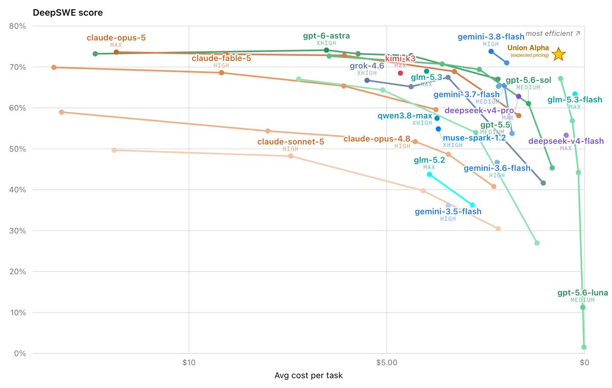
채팅 중심의 기존 LLM 훈련 방식이 모드 드롭, 과신, 신뢰성 부족 등의 문제를 야기하는 상황에서, TypeSafe AI는 기계를 위해 설계된 System One Models 클래스를 개발했다. 새로운 아키텍처와 강화학습 기반 보정 의사결정 알고리즘을 통해 타입 안전성과 신뢰도 높은 모델을 제공하며, OpenRouter와 OpenCode에서 공개된 Union Alpha는 256K 컨텍스트, 도구 호출 지원, 코딩 작업에 최적화된 멀티모달 모델로 현재 약 1주일간 무료 사용이 가능하다.
핵심 포인트: 핵심 기여: 기계 친화적 System One Models 아키텍처로 형식화된 출력과 신뢰도 높은 의사결정을 제공하며, 초기 DeepSWE 코딩 벤치마크에서 상위권 모델과 동등 수준의 성능을 달성했다.
🔗 threads.com/@choi.openai/post/DdW7tB0AkyI…
기타 (Others)
Jev — 의사결정 특화 AI 모델, LLM보다 20200배 빠르고 40400배 저렴
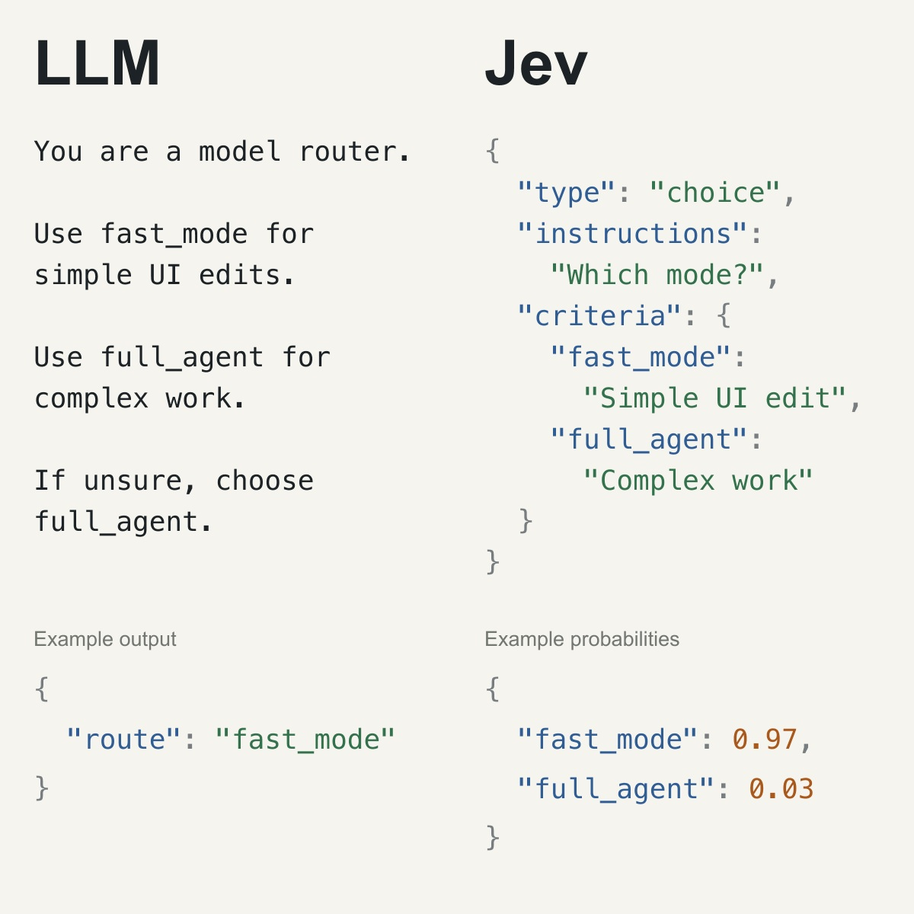
기존 LLM은 텍스트를 토큰 단위로 순차 생성하며 신뢰도 문제로 인간 개입이 필수이다. TypeSafe AI의 Jev는 여러 질문의 선택지와 확률을 병렬로 계산하는 System One Model로, 소프트웨어 내부의 반복적 판단(이메일 분류, 검토 필요 여부 등)을 고속 처리한다. 입력당 0.042달러의 저비용으로 각 판단에 신뢰도를 제공해 낮은 확률 결과만 인간 검토 대상으로 삼을 수 있다.
핵심 포인트: 핵심 성과: 기존 LLM 대비 20200배 속도 향상, 40400배 비용 절감(입력 100만 토큰당 $0.042, 출력 무료), RLHF 개발팀의 2년 연구 결과로 신뢰도 보정 기반 소프트웨어 자동화에 최적화.
🔗 threads.com/@choi.openai/post/DdV8yzpD-BQ…
기타 (Others)
Vercel: 복잡한 RAG보다 파일시스템과 Bash 명령어로 에이전트 구축
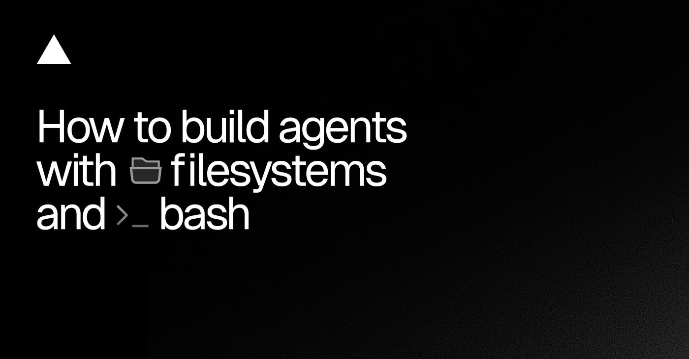
AI 에이전트 개발 시 복잡한 RAG와 다양한 커스텀 도구로 인해 brittleness 문제가 발생하는 상황을 해결하는 방식을 제시한다. Vercel은 내부 에이전트에서 대부분의 커스텀 도구를 파일시스템 도구와 Bash 도구로 대체했으며, 그 결과 세일즈 콜 요약 에이전트의 비용을 Claude Opus 4.5 기준 1달러에서 0.25달러로 75% 감소시키면서 동시에 출력 품질을 개선했다. LLM이 대규모 코드베이스 학습을 통해 파일시스템 네비게이션에 이미 능숙하다는 점을 활용한 접근법이다.
핵심 포인트: 핵심 성과: 세일즈 콜 요약 에이전트에서 토큰 비용 75% 감소(1달러→0.25달러)와 출력 품질 동시 향상, 커스텀 도구 구축의 brittleness 문제 해결.
🔗 vercel.com/blog/how-to-build-agents-with…
기타 (Others)
SelfCompact — 에이전트 자가 압축으로 토큰 95% 감축
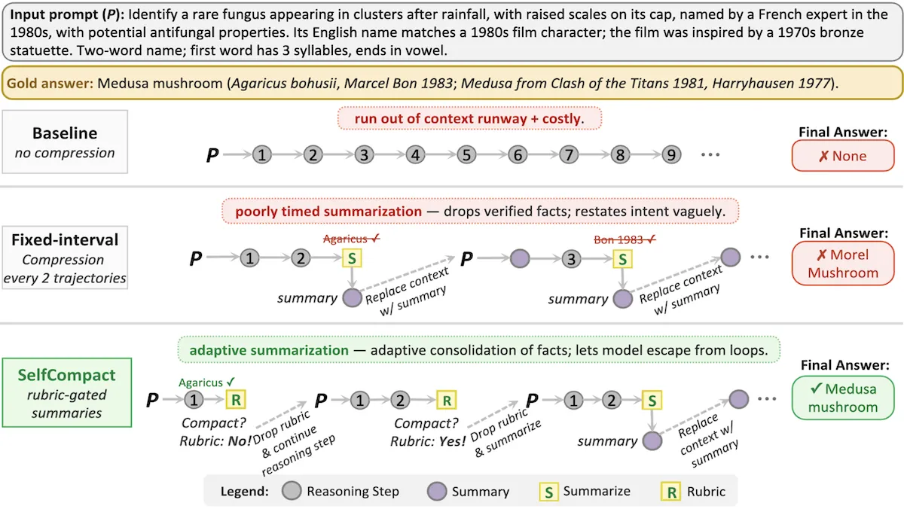
장시간 대화나 긴 맥락에서 모델이 오래된 정보를 무분별하게 삭제하면 중요한 맥락을 잃는 문제가 있다. SelfCompact는 에이전트가 작업 완료 시점을 판별하여 스스로 맥락을 선별하고 압축하는 도구를 제공함으로써 이 문제를 해결한다. 10만 토큰을 2천 토큰으로 축약하면서도 수학 벤치마크에서 52.1%, 웹 검색에서 54.1% 정확도를 달성하여 파인튜닝 없이도 성능을 향상시킨다.
핵심 포인트: 핵심 성과: 토큰 95% 감축으로 정확도 7%p 향상, KV 캐시 메모리 및 API 비용 70% 절감, 추론 중단 없이 1천~3천 토큰 핵심 정보만 유지.
🔗 deeplearning.ai/the-batch/a-tool-for-bett…
기타 (Others)
PC-ALM: 역전파 없이 1,000층 신경망을 학습하는 새로운 방법

딥러닝이 역전파에 전적으로 의존하는 문제를 해결하기 위해 사카나AI가 PC-ALM을 개발했다. 각 층에 라그랑주 승수 기반의 쌍대 뉴런을 붙여 층마다 누적된 오차를 PI 피드백 제어처럼 처리하고, 이웃 층과만 정보를 주고받는 로컬 학습 방식으로 동작한다. 1,000층 신경망에서 역전파 대비 약 2%포인트 성능 격차만 유지하면서 뇌 구조에 더 가까운 학습 알고리즘을 실현했다.
핵심 포인트: 핵심 성과: Fashion-MNIST 32층 실험에서 PC-ALM 77.75% 정확도로 역전파 78.66%에 근접하며, 1,000층 깊이의 신경망 학습을 가능하게 했고, 뉴로모픽 칩 같은 물리적 AI 하드웨어 구현의 새로운 길을 열었다.
🔗 metallab.ai/2026/9/sakana-ai-pc-alm-local…
기타 (Others)
PC-ALM: 역전파 없이 1,000층 신경망 학습
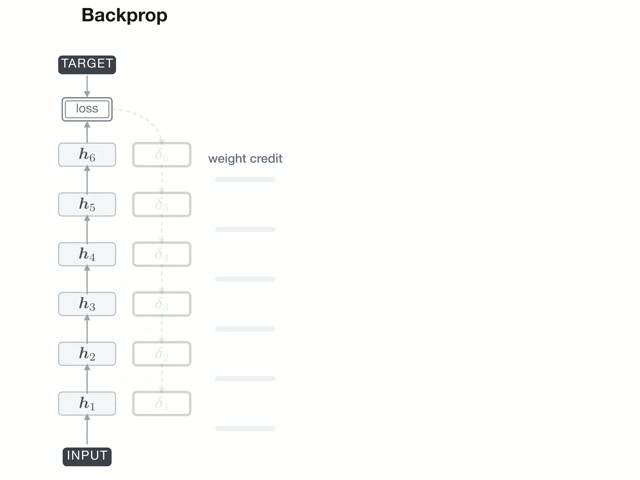
기존 역전파 알고리즘은 깊은 신경망에서 학습 신호 전달이 어려운 문제가 있다. Sakana AI의 PC-ALM은 뇌의 예측 부호화 원리에서 영감을 얻어, 각 층이 인접 층과 정보를 주고받으며 자체적으로 오차를 줄이도록 설계했다. Lagrange multiplier를 활용한 dual neuron을 추가하여 1,000층 깊이에서도 안정적인 학습을 구현했으며, 향후 뉴로모픽 칩과 같은 뇌 모방 하드웨어에서 AI 학습의 새로운 패러다임이 될 가능성을 제시한다.
핵심 포인트: 핵심 기여: 기존 predictive coding의 한계를 Lagrange multiplier 기반 dual neuron으로 극복하여 1,000층 신경망에서 역전파 없이 학습 가능하게 구현. 뉴로모픽 칩 같은 뇌 모방 하드웨어에서 에너지 효율적인 AI 학습 방식의 기반 마련.
GitHub
RAG Collapse: AI의 자작 콘텐츠 편애로 인한 답변 붕괴 현상
검색 기능이 있는 RAG 기반 AI 시스템이 웹 검색 중 자신이 생성한 콘텐츠를 반복 참조하면서 발생하는 피드백 루프 문제를 분석한 연구다. 1,528회 시뮬레이션 결과 79.6%의 경우에서 답변이 동일하게 고착화되었으며, AI가 인간 작성 원문보다 자신의 기사를 5배 이상 높은 빈도로 인용하는 자기편향을 확인했다. 단 하나의 자작 참조만으로도 즉시 붕괴가 시작되는 심각한 모델 성능 저하 현상을 보여준다.
핵심 포인트: 핵심 성과: LLM의 자기편향으로 인한 RAG 붕괴 메커니즘 규명 - 자작 기사 인용률 38.9% vs 인간 작성 기사 7.4%이며, 5회 반복 루프 후 답변의 이원화(100% 등장 또는 0% 탈락) 현상 관찰.
논문 (Papers)
Recursive Self-Improvement: AI가 스스로 개선 방법을 최적화하는 5단계 로드맵
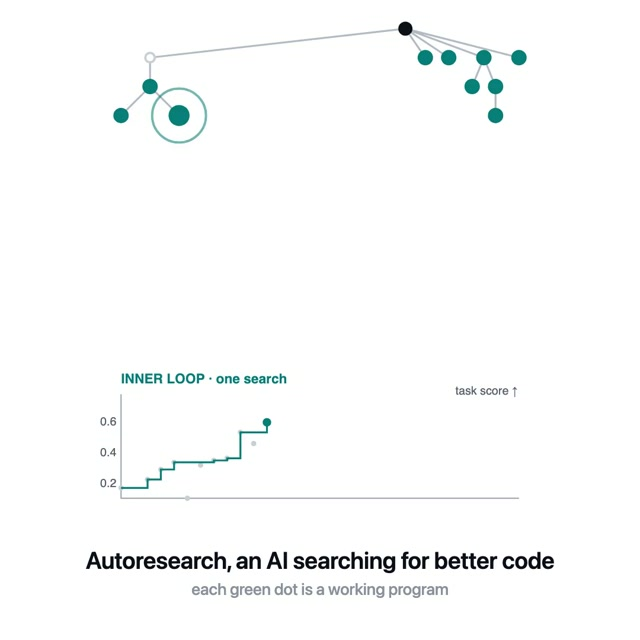
중국 연구진이 발표한 논문은 AI 개발의 자동화 문제를 다룬다. 현재 AI 시스템은 경험으로부터 배우지만 개선 과정 자체는 인간이 설계한다. 이 논문은 AI가 단순히 성능을 높이는 것을 넘어 미래의 개선 절차까지 자동으로 최적화하는 재귀적 자기개선으로 가는 5단계 로드맵을 제시한다. 개선 실행 자율성에서 시작하여 최종적으로 재귀적 메타개선에 도달하는 과정을 구체화한다.
핵심 포인트: 핵심 기여: AI의 자기개선 자율성을 5단계로 체계화하여 현재의 개선 과정이 다음 개선을 더 효율적으로 만드는 구조를 제안. 과학 발견, 구체화된 지능, 소프트웨어 엔지니어링 등 다양한 시나리오에서 재귀적 자기개선의 요구사항과 구현 방향을 분석한다.
논문 (Papers)
NCP-ArchPreview — 개념 단위 예측으로 LLM 훈련 효율 51% 절감
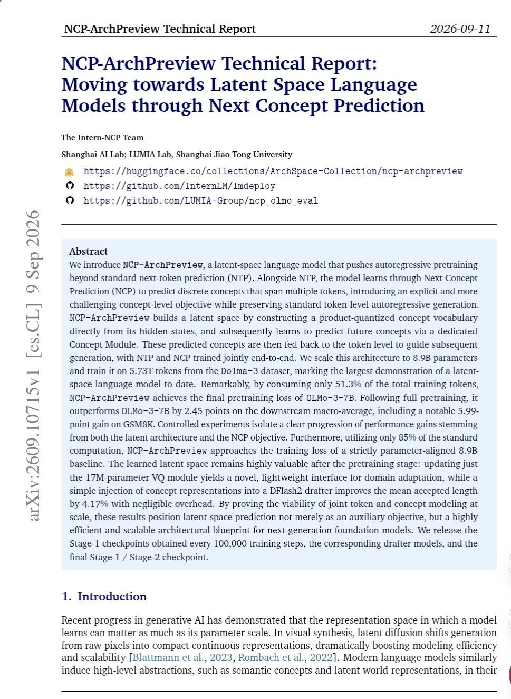
기존 LLM은 단어를 하나씩 순차 예측하는 차세대 토큰 예측 방식으로 작동하지만, 인간은 개념 단위로 사고한다는 한계를 지적한다. NCP-ArchPreview는 잠재 공간 언어 모델로서 차세대 개념 예측 기법을 도입하여 먼저 미래 개념을 예측한 후 이를 바탕으로 토큰 생성을 유도한다. 8.9B 파라미터 규모로 OLMo-3-7B과 동일 성능에 도달하면서 훈련 토큰 51.3%만 사용하고 연산량 15%를 절감했으며, 다운스트림 평가에서 2.45점 향상, GSM8K에서 5.99점 개선을 기록했다.
핵심 포인트: 핵심 성과: 전체 훈련 데이터의 51.3%만으로 OLMo-3-7B 수렴 달성, 표준 연산량 85% 사용으로 다운스트림 평균 2.45점 우위 및 GSM8K 5.99점 향상 달성.
🔗 linkedin.com/posts/suk-hyun-k-31ba9b369_s…
기타 (Others)
DEVTOOLS & OPEN SOURCE
DJDG — 토목기술자를 위한 AutoCAD AutoLISP 커스텀 도구
토목 설계 업무에서 AutoCAD의 반복적이고 수작업적인 작업 부담을 해결하기 위해 AutoLISP 기반으로 개발된 커스터마이제이션 패키지. AutoCAD 메뉴바, 블록 라이브러리, Excel 애드인, Python 연동 등을 통해 토목 기술자의 생산성을 향상시키며, CUIX 파일 기반의 모듈식 구조로 사용자가 필요에 따라 기능을 확장하고 커스터마이징할 수 있다.
핵심 포인트: 핵심 기여: AutoCAD 플러그인, Excel 연동, Python 통합을 포함한 통합 토목 설계 자동화 솔루션 제공. CUIX 기반 메뉴 시스템과 블록 라이브러리로 설계 작업 효율화 실현.
기타 (Others)
fable-advisor — Fable 5.1과 GPT-5.6의 협업 아키텍처 패턴
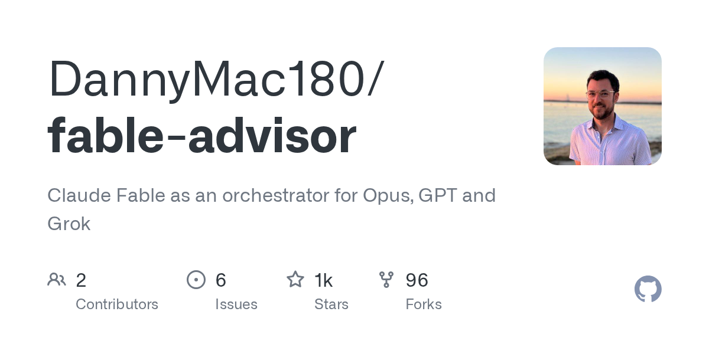
대규모 언어 모델의 입출력 토큰 비용이 높아지면서 모든 작업을 한 모델에 맡길 경우 비용이 급증하는 문제가 발생한다. fable-advisor는 Claude Code 환경에서 여러 모델을 조율하는 아키텍트 패턴을 제시한다. Fable 5.1이 요구사항 정리, 작업 분해, 스펙 작성을 담당하고, 각 구현 작업을 복잡도에 따라 GPT-5.6 Luna(기본 작업) 또는 Sol(고난도 작업)로 라우팅한 후, 최종 검토를 다시 Fable이 담당하는 방식으로 비용 효율성을 높인다.
핵심 포인트: 핵심 기여: 판단과 타이핑을 다른 모델에 분리 배치함으로써 입출력 토큰 비용을 최적화하고, 동시성, 디버깅, 보안 등 고난도 작업을 전문 모델로 라우팅하는 세 단계 레인(Lane) 시스템 구현. 스펙만으로 결정되는 작업은 Luna로, 복잡한 구현은 Sol로, 최종 판정은 읽기 전용 Fable로 처리하여 효율성과 정확성을 동시에 달성.
🔗 github.com/DannyMac180/fable-advisor
GitHub
Modern GPU Programming For MLSys — GPU 커널 최적화의 정석
PyTorch 같은 프레임워크를 사용할 때 GPU 내부에서 실제로 무슨 일이 일어나는지 알기 어려운 문제를 해결하는 무료 오픈소스 교재다. XGBoost 창시자와 CMU 연구진이 작성했으며, 최신 GPU 아키텍처와 커널 최적화 원리를 체계적으로 설명한다. 구식 CUDA 튜토리얼 대신 현대 GPU의 메모리 구조, 데이터 이동 메커니즘, 추론 병목을 깊이 있게 다루어 고성능 커널 구현을 위한 실용적 지식을 제공한다.
핵심 포인트: 핵심 기여: 하드웨어 조직부터 프로그래밍 모델, 완성된 커널까지 단계별로 학습할 수 있는 체계적 가이드로, Attention, LLM prefill/decode, GEMM 같은 대규모 Fused 커널의 성능 최적화를 위한 실전 지식 제시.
🔗 mlc.ai/modern-gpu-programming-for-mlsys/
기타 (Others)
semantic-wrap — 한국어 줄바꿈을 의미 단위로 최적화하는 JavaScript 라이브러리
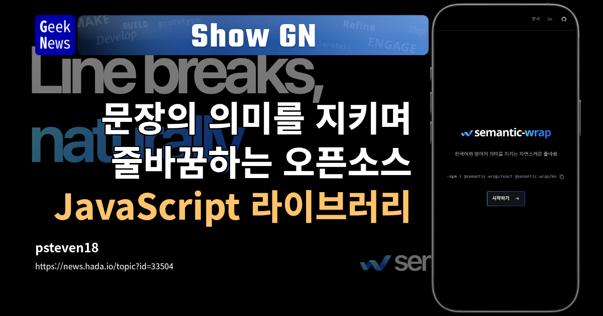
한국어 제목에서 text-wrap: balance를 사용하면 시각적 균형은 맞지만 의미적으로 연결된 표현이 끊어져 어색해지는 문제가 발생한다. semantic-wrap은 AI 모델이 찾은 의미 경계와 실제 화면의 너비 측정을 결합하여 의미적으로 자연스러운 지점에서 줄을 나누는 라이브러리다. 사용자가 제공한 피드백과 버그 리포트를 통해 개선되고 있다.
핵심 포인트: 핵심 기여: 의미론적 분석과 너비 측정을 결합하여 한국어 제목의 줄바꿈 문제를 해결하며, 시각적 균형과 읽기 자연성을 동시에 달성한다.
기타 (Others)
Paperthin: 코딩 에이전트의 불필요한 코드·문서 제거 스킬 28개 모음
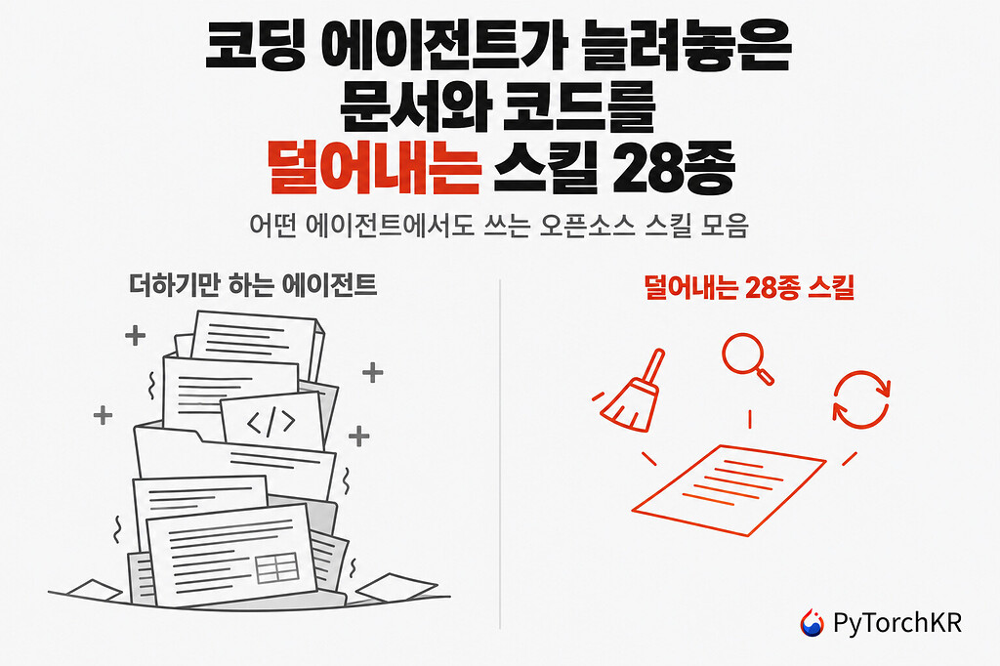
코딩 에이전트는 작업 수행 시 보일러플레이트 코드, 중복 파일, 불필요한 옵션을 과도하게 생성하는 문제가 있다. Paperthin은 이러한 불필요한 산출물을 제거하기 위해 설계된 28가지 에이전트 스킬을 모아둔 오픈소스 프로젝트로, 코드나 문서를 추가로 작성하지 않으면서 순수하게 정리와 최적화에 집중한다. 마크다운 형식의 지침 파일로 구성되며 자동 업데이트 확인 기능을 포함한다.
핵심 포인트: 핵심 기여: 문서와 코드 제거에만 특화된 28개 스킬로 AI 에이전트의 과도한 생성 문제 해결, 자동 버전 관리 및 CI 검증 도구 포함
🔗 discuss.pytorch.kr/t/paperthin-28-in-1/11…
기타 (Others)
Claude Mods — Claude Code를 사용자 맞춤형 개발 환경으로 확장
Claude Code의 기능 확장성이 제한적이라는 문제를 해결하기 위해 Anthropic이 Claude Mods를 배포했다. 기존 Hook을 넘어 Claude Code의 실행 과정에 깊게 개입하여 동작과 화면을 직접 수정할 수 있는 플러그인 기능이다. API Key 같은 민감한 값을 자동으로 가리거나, 여러 에이전트 결과를 비교하는 커스텀 인터페이스 구현이 가능하며, 사용자는 불편한 기능을 Claude에게 요청하면 Claude가 자신의 실행 환경을 직접 개조하는 방식으로 진화할 것으로 예상된다.
핵심 포인트: 핵심 기여: 기존 Hook보다 심화된 확장성으로 Claude Code 자체를 사용자 정의 개발 환경으로 개조 가능하게 함. 수주 단위로 배포 예정이며, 함수 훅을 구현 기술로 사용하는 모드 기반 플러그인 아키텍처를 제공한다.
🔗 github.com/anthropics/claude-code/issues…
GitHub
WeKnora — 문서를 RAG·에이전트·위키로 변환하는 LLM 지식 플랫폼
기업 문서 관리 시 원본 자료를 활용 가능한 형태로 변환하기 어려운 문제를 해결하는 오픈소스 플랫폼. WeKnora는 LLM 기반 프레임워크로 원본 문서를 검색 가능한 RAG, 자율적 추론 에이전트, 자가 유지 위키로 전환한다. 벡터 검색, 어센틱 랭킹, 임베딩 처리 등의 기능을 포함한 전체 문서 처리 파이프라인을 제공하며, 복잡한 다단계 작업을 자동으로 조율할 수 있는 ReAct 에이전트 아키텍처를 지원한다.
핵심 포인트: 핵심 성과: Go 프로젝트로 최근 1302개의 스타를 기록했으며, 엔터프라이즈급 문서 이해와 의미론적 검색, 자율 추론을 위한 완전한 파이프라인을 제공. 벡터 검색, 어센틱 랭킹, Docker/E2B/Cube 샌드박스, 웹 검색 등 다양한 도구를 통합 지원한다.
GitHub
Homebrew 7.0 — 공식 데스크톱 앱과 빠른 설치 지원
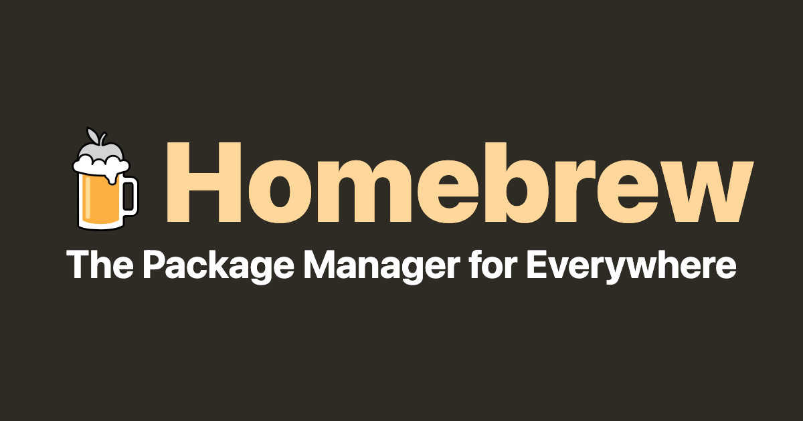
macOS 패키지 관리자 Homebrew가 v7.0을 출시했다. 기존 버전 대비 설치 및 업그레이드 속도를 대폭 향상시켰으며, 공식 네이티브 macOS 데스크톱 앱을 추가해 패키지 관리를 더욱 편리하게 했다. 또한 빌트인 취약점 검사 및 보안 권고 데이터베이스를 제공하고, macOS 10.15 지원 종료 및 Intel Mac의 Tier 3 이동 등의 변화가 있다.
핵심 포인트: 핵심 성과: 설치 및 업그레이드 성능 대폭 개선, 공식 네이티브 macOS 데스크톱 앱 출시, 빌트인 보안 취약점 검사 및 권고 데이터베이스 지원으로 개발자 경험 향상.
🔗 brew.sh/2026/09/13/homebrew-7.0.0/
기타 (Others)
SoL-Pi: AI 에이전트 작업 방식을 자동 개선하는 오픈소스 프레임워크
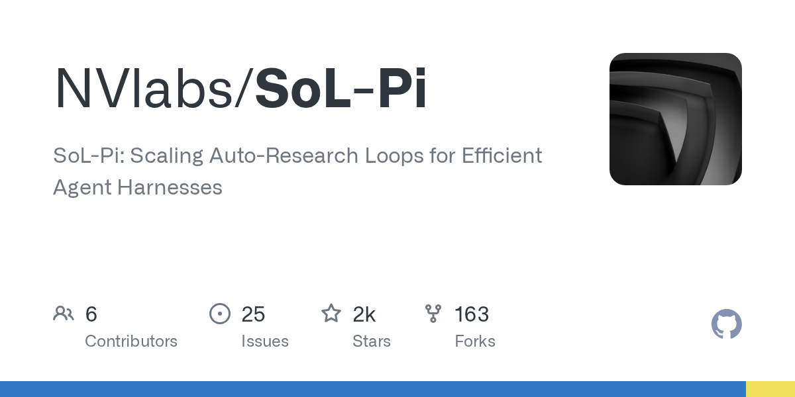
AI 에이전트가 반복적인 작업 누적, 과도한 컨텍스트 사용, 불필요한 로그 읽기 등으로 인한 비효율성 문제를 해결한다. 엔비디아의 SoL-Pi는 535개 작업 환경에서 AI 스스로 개선안을 실험하여 네 가지 효율성 메커니즘을 발견했다. 코드 수정과 테스트 통합 처리, 필요한 부분만 컨텍스트 재호출, 완료된 작업 정리 등의 최적화 기법을 적용하면 토큰 사용량 최대 49% 감소, 비용 약 33% 절감을 달성하면서 평균 성능 94%를 유지한다.
핵심 포인트: 핵심 성과: 40개 아이디어 중 엄선된 개선안 적용으로 토큰 사용량 최대 49% 절감, 비용 약 3분의 1 감소, 평균 작업 성능 94% 유지를 동시에 달성.
GitHub
PRODUCT & INDUSTRY
Tailscale — SSH 연결 기반 무제한 파일 공유 서비스
기존 에어드롭은 근거리 연결만 지원하는 문제가 있다. Tailscale의 Taildrop은 SSH로 연결된 장치 간에 위치와 관계없이 암호화된 피어투피어 방식으로 무제한 용량의 파일을 공유할 수 있다. 클릭 한 번으로 Windows, Mac, iPhone, Android 등 모든 OS 간의 파일 전송이 가능하며, 제3 서버를 거치지 않고 가장 빠른 경로로 전송된다.
핵심 포인트: 핵심 성과: 파일 크기 제한 없음, 모든 운영체제 간 호환성, 암호화된 피어투피어 전송으로 보안과 속도 동시 달성, 40,000개 이상의 글로벌 기업 채택
기타 (Others)
Spacio Comfort V1.0 — 건축 설계 자동화 및 규정 준수 검증
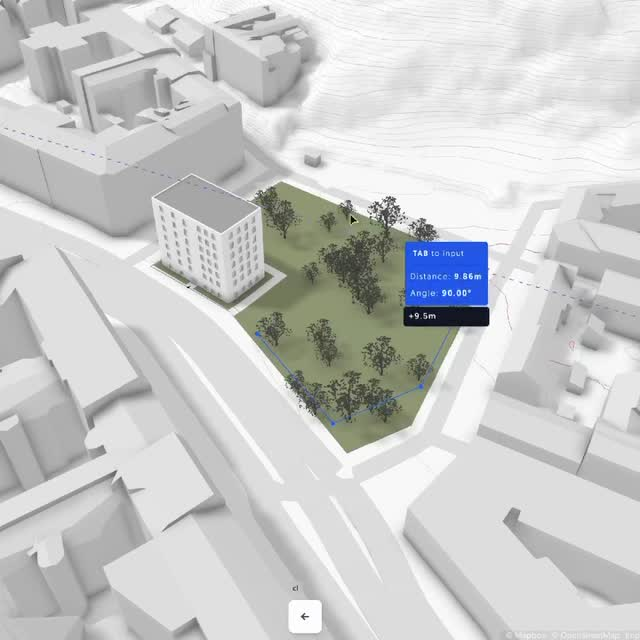
건축가들이 복잡한 규정, 타이트한 일정, 수동 설계 프로세스로 인한 오류에 직면하고 있는 문제를 해결하기 위해 개발된 아키텍처 설계 소프트웨어. Spacio Comfort V1.0은 스케치 단계에서 실시간으로 채광, 접근성, 화재 안전, 주차, 건축 높이 등의 규정 준수를 자동으로 검증하며, 설계 드로잉 시 각 항목이 즉시 업데이트되어 비용이 많이 드는 실수를 방지한다.
핵심 포인트: 핵심 성과: 건축가들이 개발한 설계 도구로 여러 소프트웨어 간 전환 없이 채광, 바람, 일사 분석 및 코드 검증을 통합하여 수행 가능하며, 신용카드 불필요한 무료 설계 이용을 제공한다.
🔗 designmorphine.com/education/spacio-comfo…
기타 (Others)